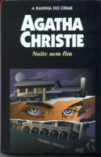

Noite sem Fim
Endless Night
Lugares malditos, casas assombradas, mortos que se levantam das tumbas, amores funestos e pessoas que fazem pacto com o diabo são temas freqüentes na literatura inglesa. Agatha Christie segue a tradição com esta história ambientada em uma grande mansão rural, erguida numa região marcada por uma antiga maldição: o Campo do Cigano. Sob o efeito do lugar, Michel Rogers fica fascinado ao conhecer a dominadora Ellie. No ardor da paixão, os dois resolvem erguer ali sua casa, sem dar atenção às advertências de uma cigana que os aconselha a se afastarem para evitar a desgraça. Mas a morte marca sua presença na figura de um assassino que parece sentir prazer em matar, atraído pelo abismo da Noite sem fim.